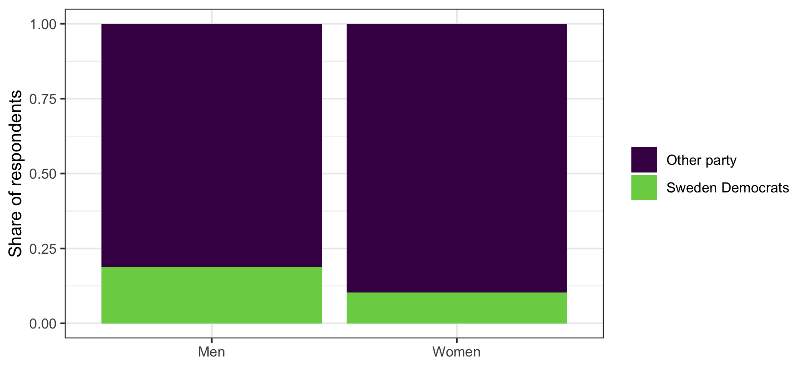

library(ggplot2)
library(dplyr)
swe <- readRDS("data/swe.rds")7 Analysing categorical data
The first application of last week’s reasoning. Two categorical variables: are they related, and how strongly?
Gender is stored as female, a 0/1 variable. For tables we want something that prints as words rather than as numbers, so make a factor first.
swe$sex <- factor(
swe$female,
levels = c(0, 1),
labels = c("Men", "Women")
)7.1 Cross-tabulations
The starting point is a table of counts. table() with two arguments gives rows by the first and columns by the second.
swe$sd_vote <- factor(
swe$vote_sd,
levels = c(0, 1),
labels = c("Other party", "Sweden Democrats")
)
counts <- table(swe$sex, swe$sd_vote)
counts##
## Other party Sweden Democrats
## Men 895 209
## Women 1103 127Counts alone are hard to read, because the groups are different sizes. Turn them into percentages with prop.table().
The second argument decides what adds up to 100, and choosing it wrongly is one of the commonest errors in student work.
round(100 * prop.table(counts, 1), 1)##
## Other party Sweden Democrats
## Men 81.1 18.9
## Women 89.7 10.31 means rows. Each row now adds to 100, so we are reading “of men, what share voted SD” — 18.9% — against 10.3% of women.
round(100 * prop.table(counts, 2), 1)##
## Other party Sweden Democrats
## Men 44.8 62.2
## Women 55.2 37.82 means columns, and it answers a completely different question: “of Sweden Democrat voters, what share are men”. And prop.table(counts) with no second argument makes the whole table add to 100.
Percentage of what? Pick the direction that matches your question. Almost always you want the percentage within the explanatory variable — here, within each sex — because the question is whether being a man makes SD voting more likely, not whether being an SD voter makes maleness more likely.
A bar chart of the same thing:
swe |>
filter(!is.na(sex), !is.na(sd_vote)) |>
ggplot(aes(x = sex, fill = sd_vote)) +
geom_bar(position = "fill") +
scale_fill_viridis_d(end = 0.8) +
labs(
x = NULL,
y = "Share of respondents",
fill = NULL
) +
theme_bw()
position = "fill" makes every bar the full height and shows composition — the visual equivalent of prop.table(counts, 1).
7.2 Is the difference real?
18.9% against 10.3% looks like a difference. But we have a sample, so the question from last week applies: could a gap this size come out of a population where men and women vote the same way?
The test works by comparing what we observed with what we would expect if the two variables were unrelated.
If sex made no difference, then the SD share among men and among women would both be the overall SD share. So the expected count in a cell is its row total times the overall proportion for that column.
row_totals <- rowSums(counts)
col_shares <- colSums(counts) / sum(counts)
expected <- outer(row_totals, col_shares)
round(expected, 1)## Other party Sweden Democrats
## Men 945.1 158.9
## Women 1052.9 177.1rowSums() and colSums() add up rows and columns. outer() multiplies every element of the first vector by every element of the second, giving a table of the same shape — each row total spread across the columns in the overall proportions.
Compare the two:
counts##
## Other party Sweden Democrats
## Men 895 209
## Women 1103 127round(expected, 1)## Other party Sweden Democrats
## Men 945.1 158.9
## Women 1052.9 177.1More SD-voting men than expected, fewer SD-voting women. The chi-squared statistic turns that comparison into one number: for every cell, the difference between observed and expected, squared, divided by the expected count, all added up.
\[\chi^2 = \sum \frac{(O_{ij} - E_{ij})^2}{E_{ij}}\]
Squaring stops the positive and negative differences cancelling. Dividing by the expected count is what makes a discrepancy of 20 count for more in a cell where 10 were expected than in one where 500 were.
sum((counts - expected)^2 / expected)## [1] 34.9654R does the whole thing, including the p-value, with chisq.test().
chisq.test(counts, correct = FALSE)##
## Pearson's Chi-squared test
##
## data: counts
## X-squared = 34.965, df = 1, p-value = 3.356e-09correct = FALSE switches off Yates’ continuity correction, which R applies by default to 2×2 tables and which changes the statistic slightly. It is off here only so that the number matches the one we calculated by hand; leave it at the default in real work.
The degrees of freedom are \((r-1) \times (c-1)\) — for a 2×2 table, 1. Once you know one cell and the totals, the rest of the table follows.
The p-value is far below 0.05, so a gap this size would be very unusual if men and women voted alike.
A question. The test answers “could this be chance?” and says no.
It does not answer “is this a big difference?”, and it does not answer “why?”. What would you need in order to answer each of those? Which of the two do you think the chi-squared test is most often mistaken for answering?
7.3 How strong: odds and odds ratios
A test tells you whether something is there. It says nothing about size — and with a large enough sample, a trivial difference will pass.
For categorical data the standard measure of size is the odds ratio.
Odds are the probability of something happening divided by the probability of it not happening. In a table, that is just one count divided by the other.
men_sd <- counts["Men", "Sweden Democrats"]
men_other <- counts["Men", "Other party"]
odds_men <- men_sd / men_other
women_sd <- counts["Women", "Sweden Democrats"]
women_other <- counts["Women", "Other party"]
odds_women <- women_sd / women_other
round(c(men = odds_men, women = odds_women), 3)## men women
## 0.234 0.115For every man who voted SD, about 4.3 voted for something else. For women the figure is about 8.7.
The odds ratio is one divided by the other.
odds_ratio <- odds_men / odds_women
odds_ratio## [1] 2.028127The odds of voting SD are about 2.03 times higher for men than for women.
An odds ratio of 1 means no association — the odds are the same in both groups. So 1 plays the role that 0 plays elsewhere.
Odds are not probabilities, and the two get confused constantly. 18.9% of men voted SD — that is a probability. The odds are 0.234. An odds ratio of 2.03 does not mean men were 2.03 times as likely to vote SD; the probabilities are 18.9% and 10.3%, a ratio closer to 1.83. Odds ratios overstate the relative risk, and the more common the outcome the worse it gets. Say “the odds are” and mean it.
7.3.1 A confidence interval for the odds ratio
An odds ratio from a sample carries the same uncertainty as anything else. The interval is built on the log scale, because odds ratios are multiplicative — 2 and 0.5 are the same size of effect in opposite directions, but on the ordinary scale one is 1 away from no-effect and the other 0.5.
se_log_or <- sqrt(sum(1 / counts))
lower <- exp(log(odds_ratio) - 1.96 * se_log_or)
upper <- exp(log(odds_ratio) + 1.96 * se_log_or)
round(c(odds_ratio, lower, upper), 3)## [1] 2.028 1.599 2.572sum(1 / counts) adds the reciprocals of the four cell counts, which is the standard error of the log odds ratio. exp() undoes log(), putting the interval back on the odds-ratio scale.
From 1.60 to 2.57. It excludes 1, which is the same conclusion the chi-squared test reached — as it must be.
Note that the interval is not symmetric around the estimate. That is the log scale showing through, and it is correct.
7.4 Bigger tables
Everything above works on tables of any size. The multiparty case is where it gets interesting.
educ_vote <- table(swe$educ3, swe$vote)
educ_vote##
## V MP S C L KD M SD
## No degree 80 42 523 87 73 86 281 276
## Bachelor 17 30 131 28 26 16 63 26
## Postgraduate 35 76 144 54 46 29 80 24test <- chisq.test(educ_vote)
test##
## Pearson's Chi-squared test
##
## data: educ_vote
## X-squared = 192.32, df = 14, p-value < 2.2e-16Highly significant. But with 24 cells, “there is an association” is not much of a finding. Where is it?
The answer is in the same observed-minus-expected comparison, scaled so that cells are comparable. chisq.test() keeps these as residuals.
round(test$residuals, 2)##
## V MP S C L KD M SD
## No degree -0.45 -5.38 0.65 -1.99 -2.02 0.28 0.66 4.74
## Bachelor -0.58 1.72 1.17 0.59 0.97 -0.78 0.02 -3.21
## Postgraduate 1.25 7.85 -2.09 2.94 2.67 0.17 -1.16 -5.50Each number says how far that cell is from what no-association would predict, in standard-error-like units. Positive means more cases than expected, negative means fewer. Anything beyond about ±2 is worth looking at.
Read the two ends of the education scale:
- Sweden Democrats: 4.74 among those with no degree, -5.50 among postgraduates. Strongly over-represented at one end, strongly under-represented at the other.
- Greens: -5.38 and 7.85. The same pattern in reverse, and even sharper.
That is the education divide in Swedish politics, and it took one table.
With a table this size, do not report the odds ratio for the whole thing — there is no such number. Pick the 2×2 comparison you actually want to make and compute the odds ratio for that.
A question. Here is the same kind of table for social class and bloc voting, which political sociology has a strong prediction about — workers vote left, the middle class votes right.
##
## Left Right
## White collar 56.1 43.9
## Worker 57.6 42.4
## Farmer 55.6 44.4
## Self-employed 35.8 64.2Workers are 57.6% left. White collar respondents are 56.1% left. The self-employed are the group that stands out, at 35.8%.
The chi-squared test on this table is significant. Does that mean class voting is alive in Sweden? What is the significant result actually detecting?
7.5 What the test assumes
Two things, and the second catches people.
The observations must be independent — one row per person, each person counted once. A table of “answers” where the same respondent contributes several is not valid input.
The expected counts must not be too small. The usual rule is that no expected count should be below 5. Below that the chi-squared approximation breaks down, and R will warn you. Look at the expected table when the warning appears:
round(chisq.test(swe$ses, swe$bloc)$expected, 1)## swe$bloc
## swe$ses Left Right
## White collar 620.7 514.3
## Worker 403.6 334.4
## Farmer 9.8 8.2
## Self-employed 109.9 91.1The Farmer row is thin — 18 cases in total. With small categories the options are to merge them into a neighbouring one, to drop them and say so, or to use fisher.test(), which does not rely on the approximation.
How to write it up.
Men were more likely than women to vote for the Sweden Democrats (18.9% against 10.3%), χ²(1) = 34.97, p < .001, n = 2334. The odds of voting for the party were 2.03 times higher for men (95% CI [1.60, 2.57]).
Give the percentages, the test with its degrees of freedom, the n, and a measure of size. Mistakes to avoid:
- Reporting the test without the table. χ² on its own tells the reader nothing about which way the association runs.
- Percentaging in the wrong direction. Decide what should add to 100 before you produce the table, not after.
- Calling an odds ratio a probability ratio. They differ, sometimes a lot.
- Reporting one χ² for a large table and stopping. For anything bigger than 2×2, say where the association is.
- Ignoring a warning about expected counts. It means the p-value is not trustworthy.
- Forgetting that χ² grows with the sample. In a large survey almost every cross-tabulation is significant. Significance is not size.
In the seminar. swirl lesson 7, Analysing Categorical Data. Cross-tabulations and percentaging, expected counts, the chi-squared test, odds ratios, and reading the residuals of a bigger table. Around 30 minutes.